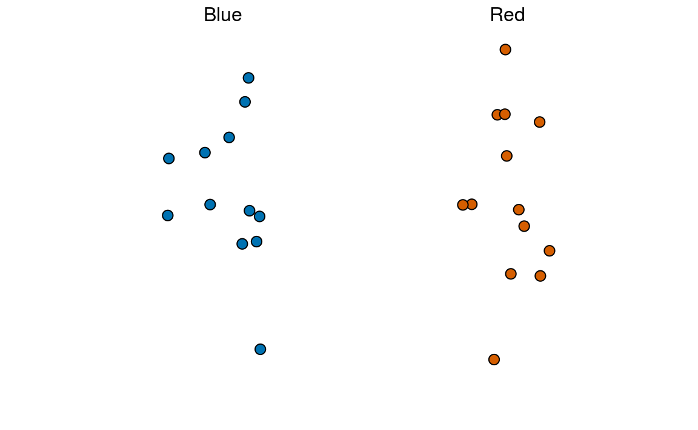
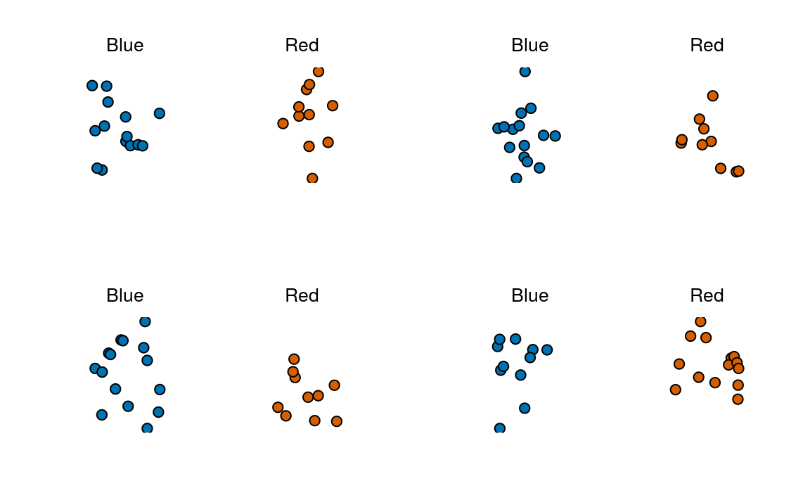
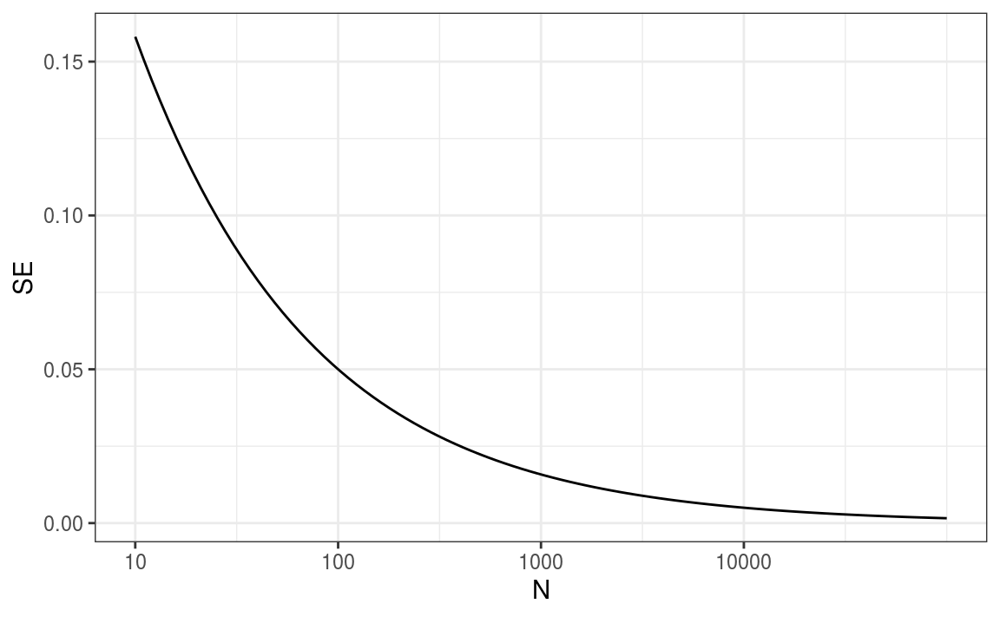

Chapter 2 Statistical inference
In Chapter ?? we will describe, in some detail, how poll aggregators such as FiveThirtyEight use data to predict election outcomes. To understand how they do this, we first need to learn the basics of Statistical Inference, the part of statistics that helps distinguish patterns arising from signal from those arising from chance. Statistical inference is a broad topic and here we go over the very basics using polls as a motivating example. To describe the concepts, we complement the mathematical formulas with Monte Carlo simulations and R code.
2.1 Polls
Opinion polling has been conducted since the 19th century. The general goal is to describe the opinions held by a specific population on a given set of topics. In recent times, these polls have been pervasive during presidential elections. Polls are useful when interviewing every member of a particular population is logistically impossible. The general strategy is to interview a smaller group, chosen at random, and then infer the opinions of the entire population from the opinions of the smaller group. Statistical theory is used to justify the process. This theory is referred to as inference and it is the main topic of this chapter.
Perhaps the best known opinion polls are those conducted to determine which candidate is preferred by voters in a given election. Political strategists make extensive use of polls to decide, among other things, how to invest resources. For example, they may want to know in which geographical locations to focus their “get out the vote” efforts.
Elections are a particularly interesting case of opinion polls because the actual opinion of the entire population is revealed on election day. Of course, it costs millions of dollars to run an actual election which makes polling a cost effective strategy for those that want to forecast the results.
Although typically the results of these polls are kept private, similar polls are conducted by news organizations because results tend to be of interest to the general public and made public. We will eventually be looking at such data.
Real Clear Politics1 is an example of a news aggregator that organizes and publishes poll results. For example, they present the following poll results reporting estimates of the popular vote for the 2016 presidential election2:
| Poll | Date | Sample | MoE | Clinton | Trump | Spread |
|---|---|---|---|---|---|---|
| Final Results | – | – | – | 48.2 | 46.1 | Clinton +2.1 |
| RCP Average | 11/1 - 11/7 | – | – | 46.8 | 43.6 | Clinton +3.2 |
| Bloomberg | 11/4 - 11/6 | 799 LV | 3.5 | 46.0 | 43.0 | Clinton +3 |
| IBD | 11/4 - 11/7 | 1107 LV | 3.1 | 43.0 | 42.0 | Clinton +1 |
| Economist | 11/4 - 11/7 | 3669 LV | – | 49.0 | 45.0 | Clinton +4 |
| LA Times | 11/1 - 11/7 | 2935 LV | 4.5 | 44.0 | 47.0 | Trump +3 |
| ABC | 11/3 - 11/6 | 2220 LV | 2.5 | 49.0 | 46.0 | Clinton +3 |
| FOX News | 11/3 - 11/6 | 1295 LV | 2.5 | 48.0 | 44.0 | Clinton +4 |
| Monmouth | 11/3 - 11/6 | 748 LV | 3.6 | 50.0 | 44.0 | Clinton +6 |
| NBC News | 11/3 - 11/5 | 1282 LV | 2.7 | 48.0 | 43.0 | Clinton +5 |
| CBS News | 11/2 - 11/6 | 1426 LV | 3.0 | 47.0 | 43.0 | Clinton +4 |
| Reuters | 11/2 - 11/6 | 2196 LV | 2.3 | 44.0 | 39.0 | Clinton +5 |
Although in the United States the popular vote does not determine the result of the presidential election, we will use it as an illustrative and simple example of how well polls work. Forecasting the election is a more complex process since it involves combining results from 50 states and DC and we describe it in Section ??.
Let’s make some observations about the table above. First, note that different polls, all taken days before the election, report a different spread: the estimated difference between support for the two candidates. Notice also that the reported spreads hover around what ended up being the actual result: Clinton won the popular vote by 2.1%. We also see a column titled MoE which stands for margin of error.
In this section, we will show how the probability concepts we learned in the previous chapter can be applied to develop the statistical approaches that make polls an effective tool. We will learn the statistical concepts necessary to define estimates and margins of errors, and show how we can use these to forecast final results relatively well and also provide an estimate of the precision of our forecast. Once we learn this, we will be able to understand two concepts that are ubiquitous in data science: confidence intervals and p-values. Finally, to understand probabilistic statements about the probability of a candidate winning, we will have to learn about Bayesian modeling. In the final sections, we put it all together to recreate the simplified version of the FiveThirtyEight model and apply it to the 2016 election.
We start by connecting probability theory to the task of using polls to learn about a population.
2.1.1 The sampling model for polls
To help us understand the connection between polls and what we have learned, let’s construct a similar situation to the one pollsters face. To mimic the challenge real pollsters face in terms of competing with other pollsters for media attention, we will use an urn full of beads to represent voters and pretend we are competing for a $25 dollar prize. The challenge is to guess the spread between the proportion of blue and red beads in this urn (in this case, a pickle jar):

Before making a prediction, you can take a sample (with replacement) from the urn. To mimic the fact that running polls is expensive, it costs you $0.10 per each bead you sample. Therefore, if your sample size is 250, and you win, you will break even since you will pay $25 to collect your $25 prize. Your entry into the competition can be an interval. If the interval you submit contains the true proportion, you get half what you paid and pass to the second phase of the competition. In the second phase, the entry with the smallest interval is selected as the winner.
The dslabs package includes a function that shows a random draw from this urn:

Think about how you would construct your interval based on the data shown above.
We have just described a simple sampling model for opinion polls. The beads inside the urn represent the individuals that will vote on election day. Those that will vote for the Republican candidate are represented with red beads and the Democrats with the blue beads. For simplicity, assume there are no other colors. That is, that there are just two parties: Republican and Democratic.
2.2 Populations, samples, parameters, and estimates
We want to predict the proportion of blue beads in the urn. Let’s call this quantity \(p\), which then tells us the proportion of red beads \(1-p\), and the spread \(p - (1-p)\), which simplifies to \(2p - 1\).
In statistical textbooks, the beads in the urn are called the population. The proportion of blue beads in the population \(p\) is called a parameter. The 25 beads we see in the previous plot are called a sample. The task of statistical inference is to predict the parameter \(p\) using the observed data in the sample.
Can we do this with the 25 observations above? It is certainly informative. For example, given that we see 13 red and 12 blue beads, it is unlikely that \(p\) > .9 or \(p\) < .1. But are we ready to predict with certainty that there are more red beads than blue in the jar?
We want to construct an estimate of \(p\) using only the information we observe. An estimate should be thought of as a summary of the observed data that we think is informative about the parameter of interest. It seems intuitive to think that the proportion of blue beads in the sample \(0.48\) must be at least related to the actual proportion \(p\). But do we simply predict \(p\) to be 0.48? First, remember that the sample proportion is a random variable. If we run the command take_poll(25) four times, we get a different answer each time, since the sample proportion is a random variable.

Note that in the four random samples shown above, the sample proportions range from 0.44 to 0.60. By describing the distribution of this random variable, we will be able to gain insights into how good this estimate is and how we can make it better.
2.2.1 The sample average
Conducting an opinion poll is being modeled as taking a random sample from an urn. We are proposing the use of the proportion of blue beads in our sample as an estimate of the parameter \(p\). Once we have this estimate, we can easily report an estimate for the spread \(2p-1\), but for simplicity we will illustrate the concepts for estimating \(p\). We will use our knowledge of probability to defend our use of the sample proportion and quantify how close we think it is from the population proportion \(p\).
We start by defining the random variable \(X\) as: \(X=1\) if we pick a blue bead at random and \(X=0\) if it is red. This implies that the population is a list of 0s and 1s. If we sample \(N\) beads, then the average of the draws \(X_1, \dots, X_N\) is equivalent to the proportion of blue beads in our sample. This is because adding the \(X\)s is equivalent to counting the blue beads and dividing this count by the total \(N\) is equivalent to computing a proportion. We use the symbol \(\bar{X}\) to represent this average. In general, in statistics textbooks a bar on top of a symbol means the average. The theory we just learned about the sum of draws becomes useful because the average is a sum of draws multiplied by the constant \(1/N\):
\[\bar{X} = 1/N \times \sum_{i=1}^N X_i\]
For simplicity, let’s assume that the draws are independent: after we see each sampled bead, we return it to the urn. In this case, what do we know about the distribution of the sum of draws? First, we know that the expected value of the sum of draws is \(N\) times the average of the values in the urn. We know that the average of the 0s and 1s in the urn must be \(p\), the proportion of blue beads.
Here we encounter an important difference with what we did in the Probability chapter: we don’t know what is in the urn. We know there are blue and red beads, but we don’t know how many of each. This is what we want to find out: we are trying to estimate \(p\).
2.2.2 Parameters
Just like we use variables to define unknowns in systems of equations, in statistical inference we define parameters to define unknown parts of our models. In the urn model which we are using to mimic an opinion poll, we do not know the proportion of blue beads in the urn. We define the parameters \(p\) to represent this quantity. \(p\) is the average of the urn because if we take the average of the 1s (blue) and 0s (red), we get the proportion of blue beads. Since our main goal is figuring out what is \(p\), we are going to estimate this parameter.
The ideas presented here on how we estimate parameters, and provide insights into how good these estimates are, extrapolate to many data science tasks. For example, we may want to determine the difference in health improvement between patients receiving treatment and a control group. We may ask, what are the health effects of smoking on a population? What are the differences in racial groups of fatal shootings by police? What is the rate of change in life expectancy in the US during the last 10 years? All these questions can be framed as a task of estimating a parameter from a sample.
2.2.3 Polling versus forecasting
Before we continue, let’s make an important clarification related to the practical problem of forecasting the election. If a poll is conducted four months before the election, it is estimating the \(p\) for that moment and not for election day. The \(p\) for election night might be different since people’s opinions fluctuate through time. The polls provided the night before the election tend to be the most accurate since opinions don’t change that much in a day. However, forecasters try to build tools that model how opinions vary across time and try to predict the election night results taking into consideration the fact that opinions fluctuate. We will describe some approaches for doing this in a later section.
2.2.4 Properties of our estimate: expected value and standard error
To understand how good our estimate is, we will describe the statistical properties of the random variable defined above: the sample proportion \(\bar{X}\). Remember that \(\bar{X}\) is the sum of independent draws so the rules we covered in the probability chapter apply.
Using what we have learned, the expected value of the sum \(N\bar{X}\) is \(N \times\) the average of the urn, \(p\). So dividing by the non-random constant \(N\) gives us that the expected value of the average \(\bar{X}\) is \(p\). We can write it using our mathematical notation:
\[ \mbox{E}(\bar{X}) = p \]
We can also use what we learned to figure out the standard error: the standard error of the sum is \(\sqrt{N} \times\) the standard deviation of the urn. Can we compute the standard error of the urn? We learned a formula that tells us that it is \((1-0) \sqrt{p (1-p)}\) = \(\sqrt{p (1-p)}\). Because we are dividing the sum by \(N\), we arrive at the following formula for the standard error of the average:
\[ \mbox{SE}(\bar{X}) = \sqrt{p(1-p)/N} \]
This result reveals the power of polls. The expected value of the sample proportion \(\bar{X}\) is the parameter of interest \(p\) and we can make the standard error as small as we want by increasing \(N\). The law of large numbers tells us that with a large enough poll, our estimate converges to \(p\).
If we take a large enough poll to make our standard error about 1%, we will be quite certain about who will win. But how large does the poll have to be for the standard error to be this small?
One problem is that we do not know \(p\), so we can’t compute the standard error. However, for illustrative purposes, let’s assume that \(p=0.51\) and make a plot of the standard error versus the sample size \(N\):

From the plot we see that we would need a poll of over 10,000 people to get the standard error that low. We rarely see polls of this size due in part to costs. From the Real Clear Politics table, we learn that the sample sizes in opinion polls range from 500-3,500 people. For a sample size of 1,000 and \(p=0.51\), the standard error is:
or 1.5 percentage points. So even with large polls, for close elections, \(\bar{X}\) can lead us astray if we don’t realize it is a random variable. Nonetheless, we can actually say more about how close we get the \(p\) and we do that in Section ??.
2.3 Exercises
1. Suppose you poll a population in which a proportion \(p\) of voters are Democrats and \(1-p\) are Republicans. Your sample size is \(N=25\). Consider the random variable \(S\) which is the total number of Democrats in your sample. What is the expected value of this random variable? Hint: it’s a function of \(p\).
2. What is the standard error of \(S\) ? Hint: it’s a function of \(p\).
3. Consider the random variable \(S/N\). This is equivalent to the sample average, which we have been denoting as \(\bar{X}\). What is the expected value of the \(\bar{X}\)? Hint: it’s a function of \(p\).
4. What is the standard error of \(\bar{X}\)? Hint: it’s a function of \(p\).
5. Write a line of code that gives you the standard error se for the problem above for several values of \(p\), specifically for p <- seq(0, 1, length = 100). Make a plot of se versus p.
6. Copy the code above and put it inside a for-loop to make the plot for \(N=25\), \(N=100\), and \(N=1000\).
7. If we are interested in the difference in proportions, \(p - (1-p)\), our estimate is \(d = \bar{X} - (1-\bar{X})\). Use the rules we learned about sums of random variables and scaled random variables to derive the expected value of \(d\).
8. What is the standard error of \(d\)?
9. If the actual \(p=.45\), it means the Republicans are winning by a relatively large margin since \(d= -.1\), which is a 10% margin of victory. In this case, what is the standard error of \(2\hat{X}-1\) if we take a sample of \(N=25\)?
10. Given the answer to 9, which of the following best describes your strategy of using a sample size of \(N=25\)?
- The expected value of our estimate \(2\bar{X}-1\) is \(d\), so our prediction will be right on.
- Our standard error is larger than the difference, so the chances of \(2\bar{X}-1\) being positive and throwing us off were not that small. We should pick a larger sample size.
- The difference is 10% and the standard error is about 0.2, therefore much smaller than the difference.
- Because we don’t know \(p\), we have no way of knowing that making \(N\) larger would actually improve our standard error.